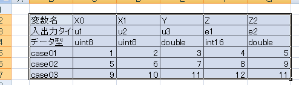
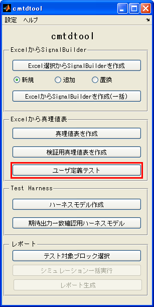
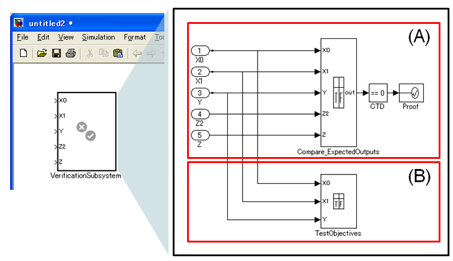
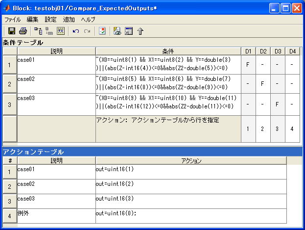
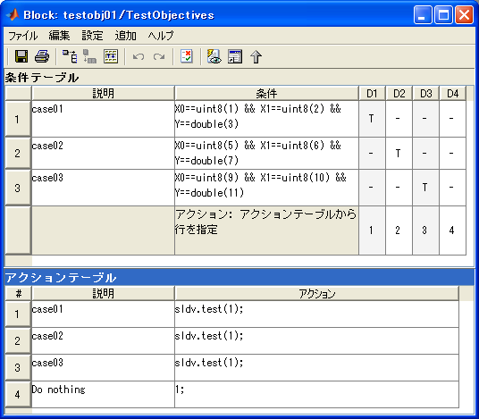

ユーザ定義テスト用TruthTableブロック作成
- MATLAB R2007a以降対応
- Simulink Verification and Validation™ 必要
- Simulink Design Verifier™ 必要
- Simulink® および Stateflow(R)必要
Contents
機能詳細
この機能は、Simulink Design Verifierのユーザ定義テストの自動生成機能を利用して、 ユーザの所望するテストを自動生成し、期待出力との一致比較を容易に実行するために 利用することができます。
(1) Excelに、入力テストベクタ＋期待出力値をリストする。

(2) 「ユーザ定義テスト」をクリックする

(3)下記のようなモデルが作成される
作成された"VerificationSubsystem"ブロックをモデル中に配置し、 Excel上に記述した期待される入力値とその期待出力を 該当する信号線に結線します。

上記(3)図内 (A) Compare_ExpectedOutputs TruthTableの説明
このTruthTableブロック内では、命題論理 implies (~P||Q) の記述により、期待するテストベクタに対する期待出力の 論理を記述しています。 たとえば、Excel上のcase01においては、 以下の条件が求められています。
X0==uint8(1) && X1==uint8(2) && Y==double(3) ならば abs(Z-int16(4))<=0 && abs(Z2-double(5))<=0 が成立する
この条件が非成立となる場合、TruthTableブロックは、出力outとして1を出力します。 その結果、Assertionブロックにおいて違反が発生することになります。
条件テーブル内のどの条件にも違反しない場合には、 outとして0以外が出力され、Assertionブロックにおいて違反は発生しません。

上記(3)図内 (B)TestObjective TruthTableの説明
TurthTableブロック内では、Excel上に記述された各case01-03の条件を満たす テストをSimulink Design Verifier によるテストケース自動生成機能を 利用して生成するように設定されています。 アクションテーブル内の「sldv.test(1)」は、そのアクションテーブル行に 到達するテストを生成するようSimulink Design Verifierに指示をしています。

本機能の利用方法
本機能には2つの利用方法があります。
- テスト生成+シミュレーション Simulink Design Verifierの自動テスト生成機能を実行すると Excel内に指定した期待する入力を与えるテストベクタを含むテストハーネスが生成されます。 生成されたテストハーネスに対してシミュレーションを実施することで、 期待出力と一致することを確認することができます。
- プロパティ検証を利用 Simulink Design Verifierのプロパティ検証を この機能から提供されるブロックを含むモデルに対して実行すると、 Compare_ExpectedOutputs TruthTableブロックに指定されている 検証命題に対して証明が行われます。もし、Compare_ExpectedOutputs TruthTableブロックの 各条件式に対して違反する入力パターンが存在するのであれば、 その証拠となる反例入力を含むテストハーネスを生成します。
ユーザ定義テスト記述ルール
- 1行目： 2列目以降に変数名を記述。この変数名はTruthTableブロックの入出力名に対応します。
- 2行目: 2列目以降に、入力の場合はu1,u2,u3,... を、期待出力の場合にはe1,e2,e3,...を記述します。
- 3秒目： データタイプ名を記述 (double, single, int8, uint8, int16, uint16, int32, uint32, boolean) ※現時点で固定小数点には未対応
- 4行目以降： 1列目にテストケース名を記述し、2列目以降には、それぞれの列に対応する入力値、期待値を記述します。
デモ実行例
- cmtdtoo\demoフォルダ内 cmtdtool_sampledata.xls を開く
- 「ユーザ定義テスト」タブ内 B2:G7を選択する
- cmtdtool 上で「ユーザ定義テスト」ボタンをクリックする
- 新規モデル上に「VerificationSubsystem」ブロックが作成されていることを確認する
- コマンドウィンドウから以下を実行することでGUIと同様な操作が実行可能であることを確認する
xls2TestObjective('cmtdtool_sampledata.xls','ユーザ定義テスト','B2:G7');